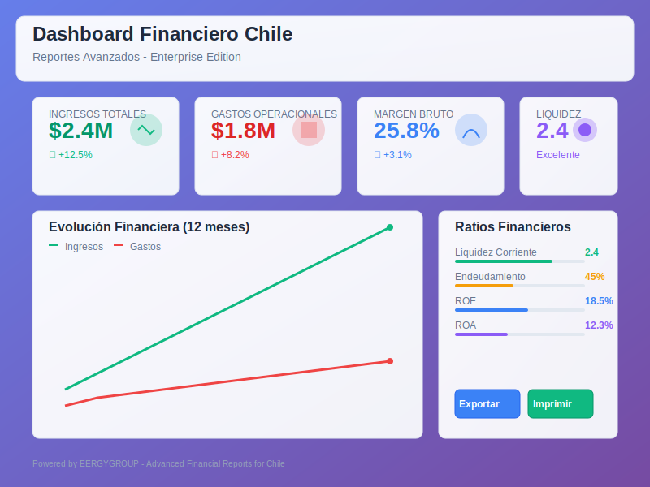

🏢 Reportes Financieros Chile - Enterprise Edition
Desarrollado por
Ing. MBA Pedro Troncoso Willz
EERGYGROUP
🔗 github.com/pwills85
Siguiendo estándares Odoo 18 y mejores prácticas OCA
📋 Descripción General
Sistema empresarial completo de reportes financieros diseñado específicamente para empresas chilenas.
Este módulo transforma Odoo en una potente plataforma de Business Intelligence financiero,
proporcionando visibilidad ejecutiva instantánea y análisis avanzado para la toma de decisiones estratégicas.
🎯 Características Principales
📊Dashboard Ejecutivo Elite
- Panel interactivo con KPIs en tiempo real
- Gráficos dinámicos con Chart.js
- Alertas y notificaciones automáticas
- Vista 360° del estado financiero
- Comparación multi-período
📈Reportes Financieros Chilenos
- Balance General adaptado a normativa SII
- Estado de Resultados con clasificación chilena
- Flujo de Caja proyectado
- Estado de Cambios en el Patrimonio
- Notas a los Estados Financieros
🔍Análisis Avanzado
- Ratios financieros automatizados
- Análisis de tendencias y proyecciones
- Benchmarking sectorial
- Análisis DuPont
- Score Altman Z
💡 Beneficios Clave
- Ahorro de Tiempo: Reducción del 80% en generación de reportes
- Precisión: Eliminación de errores manuales
- Cumplimiento: 100% alineado con normativa chilena
- Visibilidad: Información financiera en tiempo real
- Decisiones: Datos accionables para estrategia
🔧 Especificaciones Técnicas
Arquitectura Moderna
- Service Layer Pattern para separación de lógica
- OWL Framework para componentes reactivos
- API REST para integraciones
- Cache multinivel para performance
- Consultas SQL optimizadas
Compatibilidad
- Odoo 18.0+
- PostgreSQL 15+
- Python 3.10+
- 100% Responsive Design
- Multi-compañía
📸 Capturas de Pantalla
Dashboard ejecutivo con KPIs en tiempo real
🌟 ¿Por qué elegir este módulo?
Este módulo representa la evolución de los reportes financieros en Odoo, combinando la potencia
del ERP con características de Business Intelligence de nivel empresarial. Desarrollado con los
más altos estándares de calidad y siguiendo las mejores prácticas de la comunidad OCA.
🚀 Transforme sus datos financieros en decisiones estratégicas
Instalación simple • Configuración intuitiva • Resultados inmediatos